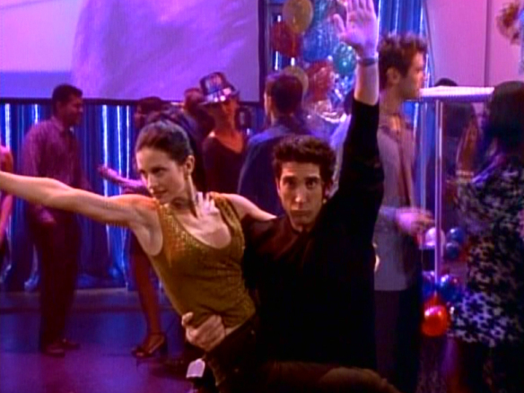

Na sexta temporada, depois de descobrir que estão casados,
Ross e Rachel concordam em anular o casamento, mas Ross
decide não querer se divorciar três vezes antes dos trinta
anos e mente para Rachel, dizendo a ela que ele anulou
a união, quando na verdade não o fez. Chandler e Monica decidem que é cedo para
se casarem, e ao invés disso, passam a morar juntos.
Chandler muda-se para o apartamento de Monica,
Rachel muda-se para o de Phoebe e Joey acaba sozinho no seu.
. Chandler planeja pedir Monica em casamento.
No último episódio, ele não consegue fazer o pedido de casamento
num restaurante chique pois Richard, ex-namorado de Mônica, aparece.
Após uma grande confusão, Joey conta a Monica o plano de Chandler, o
que faz com que ela o peça em casamento.
Melhores episódios:
- "Aquele da Negação de Ross" (06x03)
- "Aquele da Última Noite" (06x06)
- "Aquele da Rotina" (06x10)
- "Aquele que Poderia Ter Sido" (06x15/16)
- "Aquele com o Anel" (06x23)
